Nos
Projets
Des programmes structurants déployés avec des bailleurs internationaux, des institutions publiques et des acteurs de terrain pour un impact social mesurable et durable.
3 Continents,
1 Vision
ESMaroc déploie ses programmes en partenariat avec des organisations implantées sur trois continents.
Maroc · Tunisie · Égypte · Jordanie
France · Italie · Danemark · Espagne
ONU · UNICEF · OIM · Réseaux globaux

UPSHIFT
Sensibilisation de +1 000 jeunes à l'entrepreneuriat social et accompagnement de 5 startups via un bootcamp intensif de 6 jours.

NAWAT
Renforcement des capacités de 20 TPE à travers un accompagnement stratégique, du réseautage et des conférences sectorielles.

RESTART
Création de 50+ startups éco-durables, prototypage de 600 idées et élaboration de 450 business plans avec subventions de démarrage.

Avec les Jeunes
147 jeunes auto-entrepreneurs et 83 insertions dans le marché du travail via guichet d'insertion et stages rémunérés.
FLOWER
Formation de +2 000 femmes au Maroc et en Tunisie pour améliorer l'accès aux marchés, les revenus et l'intégration à la sécurité sociale.

Migration & DD
Accompagnement technique et financier de +200 porteurs de projets migrants, avec création de coopératives et d'auto-entrepreneurs.
JISR
Autonomisation de ~1 000 femmes vulnérables à Tanger-Assilah via accompagnement, coaching, incubation et AGR sur 24 mois.

DAR-LIBTIKAR
Parcours d'incubation de 8–9 mois pour dynamiser l'innovation sociale territoriale et faire émerger des solutions durables et duplicables.
DAPP
Programme emploi, entrepreneuriat et droits humains pour les 18–35 ans dans la région MENA, déployé dans 4 pays dont le Maroc.
Conventions & Partenariats
Un réseau de conventions avec des partenaires institutionnels (ANAPEC, Maroc PME, Entraide Nationale…) et associatifs (AAUPE, Al Jisr, OJA…) pour un impact structuré à l'échelle nationale.

Work for Life – Entrepreneuriat Collectif
Le projet W4L – Work for Life, financé par l'Union Européenne, a soutenu l'insertion socio-économique des personnes migrantes via l'entrepreneuriat collectif, avec la création et la structuration de plus d'une vingtaine de coopératives et entreprises sociales viables.
Cluster Industriel – Technologies d'Assemblage
ESMaroc a contribué à la structuration d'un cluster industriel en partenariat avec la GIZ dans le secteur des technologies d'assemblage, renforçant la compétitivité et l'innovation sectorielle au Maroc.
LOG MED – Connecter l'Avenir
Le projet LOG MED, soutenu par la coopération italienne, vise à renforcer l'employabilité et le potentiel entrepreneurial des jeunes et des femmes dans les régions de Rabat-Salé-Kénitra et Tanger-Tétouan-Al Hoceima.
À travers ses Hubs, il active un écosystème de stages de perfectionnement rémunérés et un accompagnement technique sur mesure pour favoriser une croissance économique inclusive et durable.